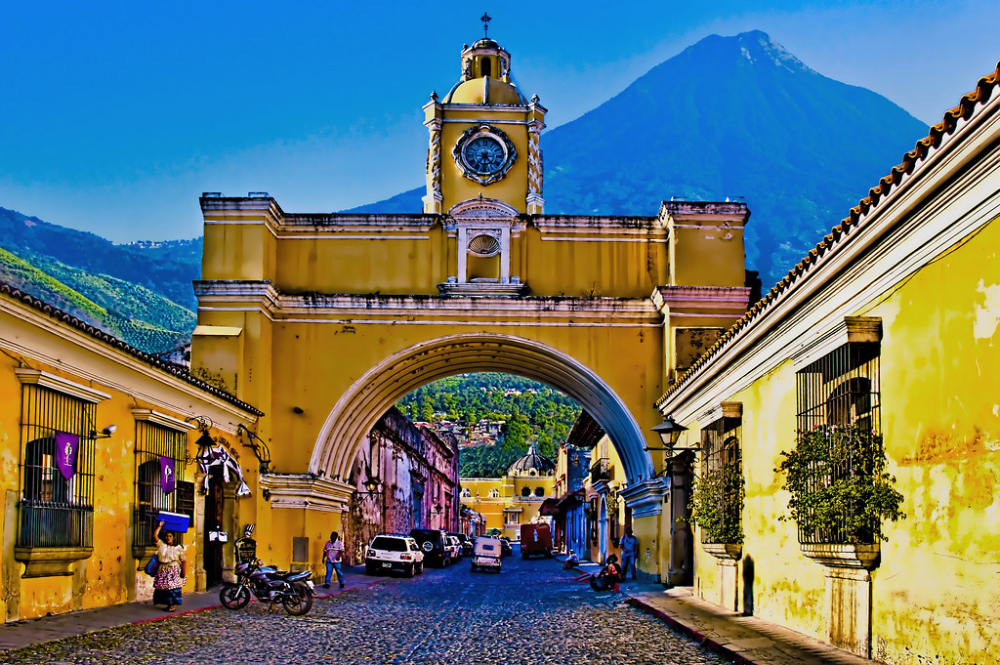
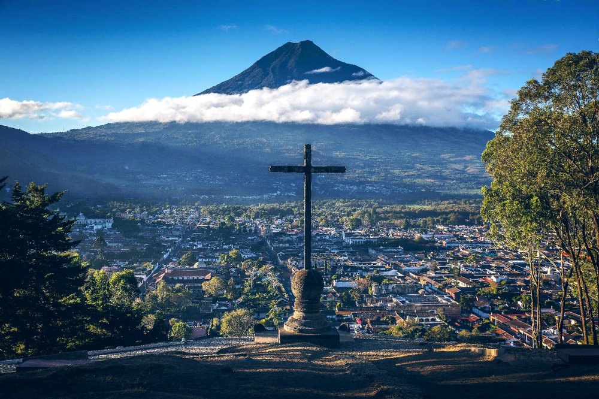
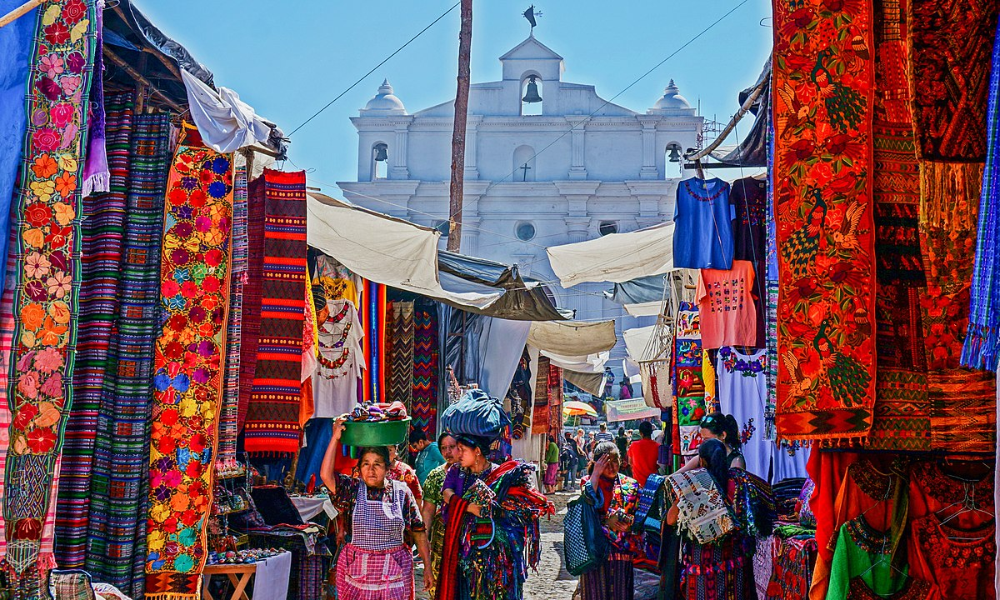

The Acetenango Volcano Hike
The hike is a 2 day and overnight hike all the way to the top of the volcano. There is another volcano near by that is very active but can't hike it because of how active it is. This hike still is close to Volcano Fuego so you'll see the lava seeping out. To be able to hike there needs to bea booking and everything with be provided for 250Q or $35. Some can pay more to have a more luxury in bedding.

Santa Catalina Arch
If you don't want to be as physical doing a 2 day hike; this arch has been a very popular tourist picture to mark that you've been in Antigua. When the sky is just right the Fuego Volcano can be seen along with the arch. There will be "professional" photographers with high quality cameras to capture the view just right.
Cerro de la Cruz
This place offers a short 30 minute hike upwards to the cneter of Antigua. It offers stunning view across the city and its a great place to catch the sunset. There will be awesome views of volcanoes.
Coffee Tour
Guatemala is a rich coffee region with several different kinds of tours to take.
The Chichicastenango Market
The Chichicastenango Market hosts market days thursday through sunday where vender sell handmade crafts. It is one of the largest and most well known market not just in Guatemala but in all of Central America. There are several tour operators arranging day trip to the market, so there will be easy ways to find the place if you want to visit.
